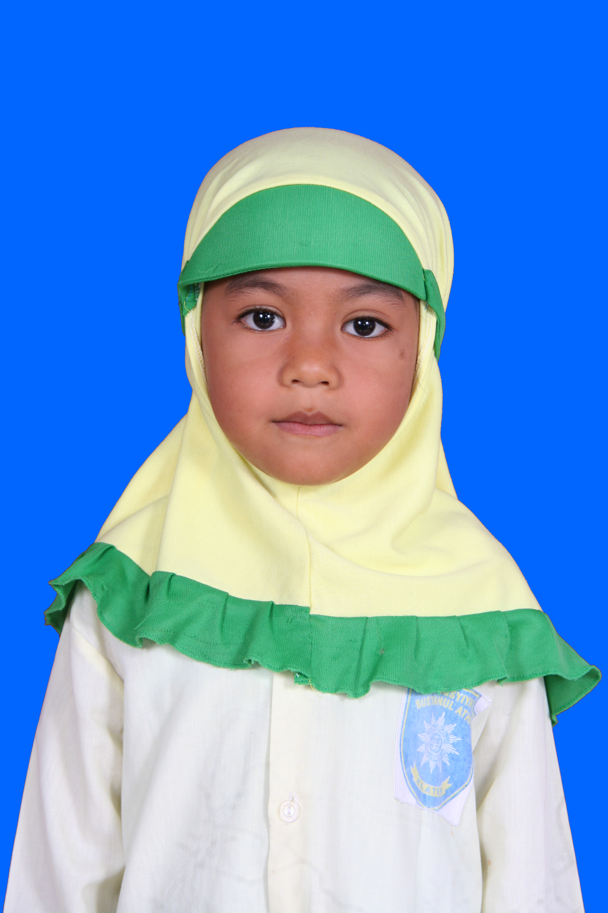

| Nama | : | Nazala Shayla Maulidia |  |
| Tempat, Tanggal Lahir | : | Klaten, 21 April 2007 | |
| : | nazala.shyla@gmail.com | ||
| No. HP | : | +62 831 0528 0828 | |
| Alamat | : | Jatinom, Klaten, Jawa Tengah |
Saya merupakan mahasiswa Sains Data yang tertarik pada dunia teknologi, analisis data, dan pemrograman. Saya memiliki semangat untuk terus belajar, mencoba hal baru, dan mengembangkan kemampuan melalui pengalaman serta proyek yang dikerjakan.
| TAHUN | INSTITUSI | JURUSAN |
|---|---|---|
| 2025-sekarang | UIN Raden Mas Said Surakarta | Sains Data |
| 2023-2025 | SMA NEGERI 1 JATINOM | IPA |
| 2019-2023 | SMP NEGERI 1 JATINOM | UMUM |
2025-sekarang
2026-sekarang